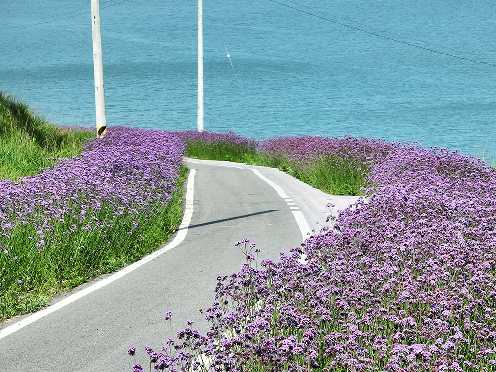
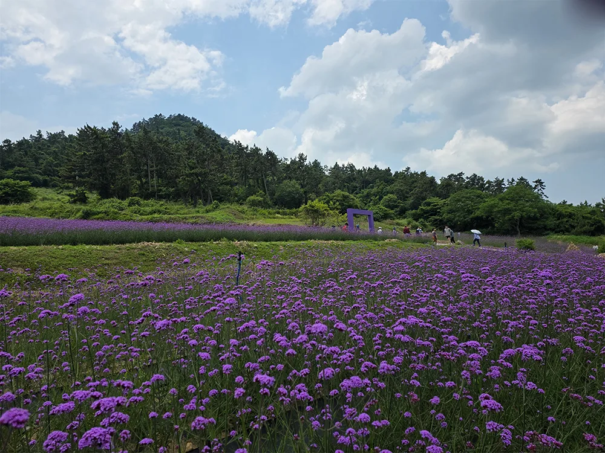
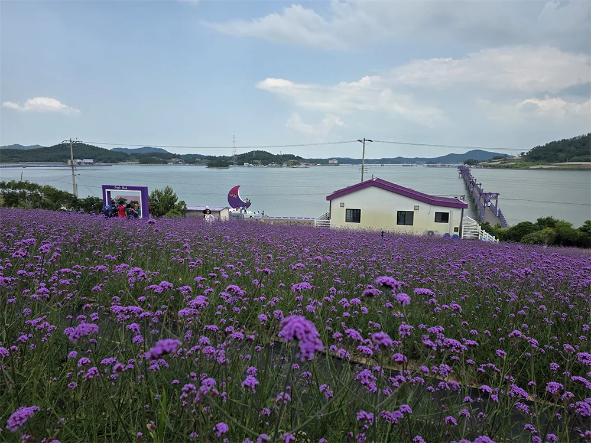

▲ 퍼플섬 반월도 언덕에서 내려다본 버들마편초 꽃밭과 바다 위 퍼플교 ⓒ 신안군청 공식
전남 신안군 안좌면 두리마을 앞바다, 반월도와 박지도를 잇는 '퍼플섬'에서 버들마편초 꽃축제가 한창이다. 2026년 6월 12일 시작한 이 축제는 9월 13일까지 석 달 가까이 이어지는데, 반월도 정원과 퍼플섬 해안로를 따라 심어진 버들마편초 40만 주가 보라색 물결을 이룬다. 개화 시기가 6월부터 9월까지 길게 이어지는 만큼, 9월 초인 지금도 여전히 방문할 시간이 남아 있다.
1. 왜 하필 보라색인가

▲ 퍼플섬 해안로. 도로 양옆으로 버들마편초가 가득 피어 있어 걷는 것만으로도 사진이 된다 ⓒ 신안군청 공식
반월도·박지도는 2021년 유엔세계관광기구(UNWTO)가 선정한 '세계 최우수 관광마을'로, 마을 지붕과 도로, 쓰레기통, 식당 그릇까지 온통 보라색으로 통일한 것이 특징이다. 여기에 매년 여름부터 초가을까지 버들마편초가 만개하면서, 꽃과 마을 전체가 하나의 보라색 풍경을 이룬다. 라벤더 축제로 부르는 경우도 있지만 정확히는 마편초과의 '버들마편초'가 주인공이다.
2. 입장료 5,000원, 그런데 보라색 옷이면 공짜

▲ 버들마편초 꽃밭 사이 산책로와 보라색 포토존 아치. 보라색 아이템 하나만 착용해도 입장료가 면제된다 ⓒ 신안군청 공식
퍼플섬 입장료는 성인 5,000원, 청소년·군인 3,000원, 어린이(7~12세) 1,000원이다. 그런데 이 섬의 진짜 특징은 따로 있다. 보라색 상의, 하의, 신발, 우산, 모자 중 단 하나만 착용해도 입장료 전액이 면제된다는 점이다. 반려동물조차 보라색 아이템을 착용하면 함께 무료로 입장할 수 있다고 알려져 있다. 실제로 관람객 대다수가 이 방식으로 무료입장을 택하는 것으로 전해진다. 운영 시간은 매표소 기준 09:00~18:00이며 연중무휴다.
신안군 문화관광 홈페이지에서 확인 가능3. 반월도·박지도, 걸어서 건너는 두 개의 다리

▲ 반월도에서 박지도로 이어지는 퍼플교. 자동차는 진입할 수 없고 도보나 전동카트로만 건널 수 있다 ⓒ 신안군청 공식
안좌도-반월도를 잇는 문브릿지(380m), 반월도-박지도를 잇는 퍼플교(915m), 박지도-안좌도를 잇는 또 다른 퍼플교(547m)까지, 세 섬은 모두 바다 위 보라색 도보 다리로 연결돼 있다. 이 다리들은 자동차가 다닐 수 없는 도보 전용 교량이다. 걸어서 반월도 둘레길은 약 120분, 박지도 둘레길은 약 90분이 걸리는데, 시간이 부족하다면 4인승 전동카트(30분 2만 원, 운영시간 09:00~17:00, 점심시간 12:30~13:30 제외)를 이용할 수 있다. 박지 입구에서 라벤더(버들마편초) 정원까지는 전동카트로 약 5분이면 닿는다.
4. 주차 — 안좌도 두리마을 무료주차장
퍼플섬은 신안군 안좌면 소곡두리길 257-35에 있으며, 안좌도 두리마을에 무료 주차공간이 마련돼 있다. 두리마을에는 박지도 방향, 반월도 방향으로 각각 가까운 입구가 있어 대부분의 방문객은 두리→단도→반월도→박지도→두리로 돌아오는 순환 코스를 택한다. 다만 주말과 공휴일, 특히 꽃이 절정에 이르는 시기에는 주차장이 붐빌 수 있어 평일 방문이 여유롭다.
5. 인근 연계 코스 — 천사대교 드라이브
퍼플섬이 있는 안좌도는 천사대교를 건너야 닿을 수 있는 섬이다. 압해도와 암태도를 잇는 국도 2호선 천사대교(총연장 10.8km)를 지나 몇 개의 연도교를 더 건너면 안좌도에 이른다. 천사대교 자체의 구조나 드라이브 코스에 대해서는 카프리즘이 별도로 다룬 적이 있으니, 이번 방문에서는 다리를 건너는 과정보다 도착한 뒤 만나는 보라색 섬 풍경에 집중해볼 만하다.
6. 정리
체크포인트
- 2026년 버들마편초 축제는 9월 13일까지 이어진다.
- 입장료는 5,000원이지만 보라색 아이템 하나만 착용해도 무료다.
- 반월도·박지도 간 이동은 도보 또는 유료 전동카트만 가능하다.
- 주차는 안좌도 두리마을 무료주차장을 이용한다.
- 평일 방문이 주차와 관람 모두 여유롭다.